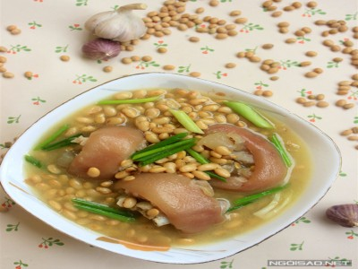

|  |
Food's name: Soybean stewed pork leg▸ Ingredients:
▸ Time to prepare: 1 hour 30 minutes ▸ Approx quantity: 2 medium bowls |
▸ Detailed recipe:
- Wash the soybeans, soak for at least half a day or overnight for the beans to expand. Wash the pork leg, put in a pot with the amount of
water to cover the face, boil for about 3 minutes, then turn off the heat. Then wash the nail again.
- Stir-fry minced purple onion with 2 tablespoons cooking oil. Add the white part of the scallions and stir well. Add pork leg, stir well.
Add 1 teaspoon of fish sauce, 1 teaspoon of seasoning, 1/2 teaspoon of salt to taste.
- Add soaked soybeans to the island to infuse the seasoning. Pour in the required amount of water, bring to a boil, reduce heat and simmer
until the beans are cooked.
- Ladle the soup into a bowl, sprinkle scallions on top.
▸ Calories and related information: